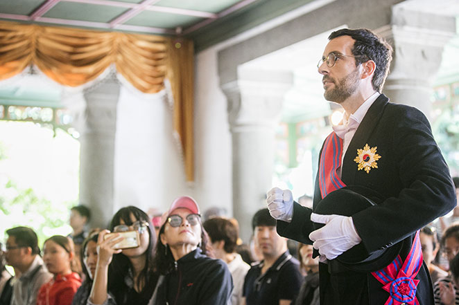
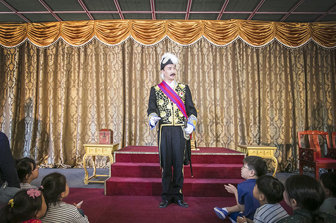

-창덕궁 달빛기행-
창덕궁 달빛기행은 은은 달빛아래 녹음이 어우러진 창덕궁에서 전문해설사와 함께 궁궐의 곳곳을 관람하며,
각 전각에 대한 해설과 전통예술공연을 관람할 수 있는 프로그램입니다.
창덕궁 정문인 돈화문에서 출발해 진선문 · 인정전 · 낙선재 · 상량정 · 부용지 · 불로문 · 존덕정&관람지 · 연경당 · 후원 숲길을 이동하며
창덕궁 달빛기행에서만 경험할 수 있는 특별한 감동을 선사할 것입니다.
프로그램 소개
달빛기행 야간관람 코스 (약100분)
아름다운 창덕궁의 야경을 둘러보며 안내해설을 감상하실 수 있습니다.
① 돈화문(집결, 해산) → ② 금천교 → ③ 인정전 → ④ 낙선재 → ⑤ 상량정(대금연주)
→ ⑥ 부용지·부용정 → ⑦ 불로문 → ⑧ 존덕정 일원(판소리) → ⑨ 연경당(전통예술공연) → ⑩ 후원숲길

